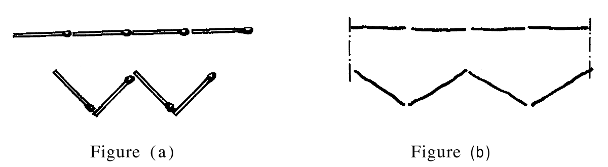

Les modèles dialectiques : J. Piaget (Note technique n° 10, GEPAN)
6.1. Présentation
PIAGET (1961) Piaget, J.: Les mécanismes
perceptifs, Paris, PUF, se situe d'emblée en opposition avec la Gestalttheorie, gêné par le caractère invariant de la structuration
perceptive, tout en acceptant le principe de cette dernière.
Nous pouvons résumer la théorie de PIAGET avec les idées
suivantes :
- Il y a deux niveaux perceptifs, situés dans le temps (les « effets primaires » et les « activités
perceptives »). C'est donc une théorie linéaireVoir page 5 et
suivantes..
- Le deuxième de ces niveaux (les activités perceptives) implique une inter-relation, entre l'événement et le
sujet, qui construit la représentation perceptive (percept). C'est une théorie dialectiqueVoir
page 5 et suivantes..
- Un élément sensoriel (par exemple un point, une forme, projetés sur la rétine) ne constitue pas, pour PIAGET, une unité perceptive. C'est la relation entre plusieurs
éléments sensoriels (la grandeur relative de deux droites par exemple) qui est une unité (donnée, élément)
perceptive. C'est une théorie moléculaireVoir page 5 et
suivantes..
- Le deuxième niveau perceptif (les activités perceptives) se restructure en permanence avec l'âge du sujet ; en
même temps, le premier niveau (les effets primaires) tend à disparaître. C'est une théorie évolutiveVoir page 5 et suivantes..
6.2. Les niveaux perceptifs
Les effets primaires (ou « effets de champ ») résultent du mécanisme de « centration » : c'est la surestimation
d'un élément du « champ perceptif » (ou élément sensoriel) par rapport aux autres.
Les activités perceptives régulent les effets primaires par « transposition », « comparaison »,
« schématisation »… Ce sont les mises en rapport des relations.
En général, il s'agit de centrations successives sur tous les éléments du champ perceptif, qui compensent les
surestimations découlant de chacune d'entre elles. Mais cette décentration n'est jamais complète ; la perception
résulte d'un équilibre, en fonction des probabilités de rencontre dans le champ perceptif.
Le processus perceptif selon PIAGET dépasse une conception
instantanée de la prise d'information perceptive. Les activités perceptives sont des processus qui relient les
centrations à des distances dans l'espace ou dans le temps excluant une interaction immédiate
. L'activité
perceptive s'accompagne donc toujours d'un processus d'analyse et de traitement des données dont elle est
indissociable.
La schématisation est l'activité perceptive la plus complexe. Le schéma perceptif est le produit d'activités
perceptives (exploration, transposition…) telles que, en présence d'objets appartenant à une même classea posteriori ou pour un observateur extérieur., le sujet se livre aux mêmes
formes d'exploration et de mise en relation, jusqu'à l'identification perceptive
.
6.3. Les erreurs perceptives
Par rapport au témoignage humain, PIAGET a mis en évidence « l'erreur de l'étalon ». La centration sur un
élément particulier de l'espace perceptif le privilégie par rapport aux autres, il est alors surestimé.
Cette hypothèse a été confirmée par quelques expériences portant sur la comparaison de la longueur de plusieurs
segments. On a montré la surestimation :
- du segment sur lequel se centre le regard,
- du segment situé en vision périphérique mais imposé par l'expérimentateur,
- du segment fixé plus longtemps ou en dernier (cités par PIAGET,
1961 Piaget, J.: Les mécanismes perceptifs, Paris, PUF, ).
Le deuxième niveau perceptif, les activités, introduit aussi des erreurs caractérisées. Le percept est, en effet,
dépendant des schémas disponibles et choisis par le sujet. Il n'est pas ce que le sujet « voit » mais ce que le
sujet « sait » de ce qu'il voit. Par exemple, PIAGET et INHELDER (1968) Piaget, J., Inhelder, B.:
Mémoire et intelligence, Paris, PUF, demandent aux enfants de
reproduire deux figures composées chacune de quatre allumettes, une droite et un W (voir figure a ci-dessous).
D'après PIAGET et INHELDER (1968)

Les enfants de 7 ans arrivent à reproduire le bon nombre de traits, mais en augmentant la taille de la deuxième
figure, les enfants considéraient que deux figures ayant le même nombre d'éléments (4) devaient occuper la même
longueur (voir fig. b). Seuls quelques enfants reproduisent la bonne taille de la deuxième figure, lorsqu'ils
l'assimilent à la lettre W.
6.4. Conclusions
En résumé, selon la théorie de PIAGET, la perception se trouve
dans la rencontre entre un univers non structuré et un sujet qui, isolé, introduit des relations ; il structure.
La perception est proche du réel, dans la mesure où l'expérience du sujet le conduit à élaborer des schémas de
plus en plus adaptés à ce réel. Mais elle est toujours approximative, puisqu'elle travaille sur des effets de champs
(centration) et sur des schémas perceptifs.